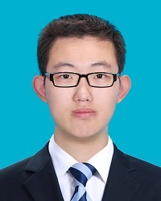

Ren Yang
Info
| Degree | Master Student | Date of Enrollment | 2016 |
| yangren@buaa.edu.cn | |||
| Interest Fields | Computer Vision, Video Coding | ||
| Address | MC2 Lab, Beihang University | ||
Ren Yang received the B.S. degree from Beihang University in 2016. He is currently pursuing the M.S. degree at the School of Electronic and Information Engineering, Beihang University, Beijing, China. His research interests mainly include computer vision and video coding.
His Publications
-
Ren Yang, Mai Xu, Zulin Wang, and Tianyi Li. "Multi-Frame Quality Enhancement for Compressed Video." In Proceedings of the IEEE Conference on Computer Vision and Pattern Recognition, 2018.
| Download PDF | Download Code | -
Ren Yang, Mai Xu, Zulin Wang, Yiping Duan, and Xiaoming Tao. "Saliency-guided complexity control for hevc decoding." IEEE Transactions on Broadcasting (2018).
| Download PDF | -
Yiping Duan, Xiaoming Tao, Mai Xu, Xiaowei Qin, Ren Yang and Jianhua Lu, “Hierarchical Multinomial Latent Model with G0 Distribution for Synthetic Aperture Radar Image Semantic Segmentation”, IEEE Access, 2018. (IF = 3.244)
-
Ren Yang, Mai Xu, and Zulin Wang. "Decoder-side HEVC quality enhancement with scalable convolutional neural network." In 2017 IEEE International Conference on Multimedia and Expo (ICME), pp. 817-822. IEEE, 2017.
| Download PDF | Download Code | -
Ren Yang, Mai Xu, Lai Jiang, and Zulin Wang. "Subjective-quality-optimized complexity control for HEVC decoding." In 2016 IEEE International Conference on Multimedia and Expo (ICME), pp. 1-6. IEEE, 2016.
| Download PDF | -
Mai Xu, Ren Yang and Xiaoming Tao. Saliency-Based Complexity Control Approach for HEVC Decoding: China Patent CN106210717A[P]. 2017. (issued)